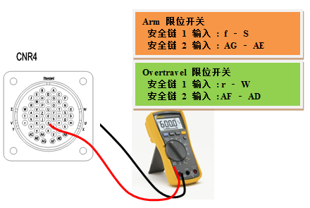

安装于机器人各轴的工作区域端部的限位开关运行。机器人为了安全而立即停止，不能正常运转，直到其按适当方法移动到安全工作区域为止。
|
(1) 请确认是否实际脱离工作区域。 n 脱离工作区域时使其复位的方法
(2) 在没有脱离工作区域的情况下发生错误时 n 通过系统板连接器(CNLS)进行检查 n 通过线束 (CNR4 或 CNR04)进行检查 n 检查限位开关及本体内部配线 |
(1) 请确认是否实际脱离工作区域。
请确认机器人是否实际脱离工作区域。如果同时发生软限位错误，这就表示机器人已脱离工作区域。请按适当的操作方法将机器人移动到工作区域内。工作区域根据机器人型号的不同而有所不同，因此，限位开关的安装位置也会不同，请参考该机器人维修说明书的“工作范围限制”部分。
图 5.1 机器人的硬件限位开关安装位置
图 5.2 机器人的S轴限位开关工作范围
n 脱离工作区域时使其复位的方法
为了使机器人在硬件限位开关启动的状态移动，请按以下条件和顺序执行操作。首先在手动模式下进入系统后抓住示教盒的启动开关。
在此状态下启动马达后、利用Jog键将机器人移动到工作区域内。
(2) 没有脱离工作区域的情况下发生错误时
首先在示教盒的专用输入信号窗确认是否继续输入限位(Over-Travel)项目。此窗可通过“『[F1]: 服务』 → 『1: 监测』 → 『2: 输入/输出信号』 → 『1: 专用输入信号』” 选择。限位(Over-Travel)项目显示为黄色、就表示错误状态。
若出现这种情况，可在与限位开关有关的构件中查找其原因。如下图所示、限位开关从本体通过“CER1 – CEC1”电缆连接于控制器系统板。
图 5.3 与限位开关状态输入有关的配线
主要检查重点和顺序如下:
① 顺序电路板
② 控制器内部的配线及连接器
③ 线束及连接器
④ 限位开关及本体配线
在适当部位上将限位开关的输入线跳接（Jumper）后，在监测窗上确认限位(Over-Travel)项目是否变为白色。
请按以下操作顺序进行。
n 通过系统板连接器(CNLS)进行检查
可通过系统板的CNLS连接器判断基板的故障与否。如下图所示，在CNLS连接器上对与限位开关输入有关的针脚（Pin）进行跳线短接。在此状态下通过专用输入信号监测窗确认限位(Over-Travel)项目的状态。
① 若其变为白色，这就表示系统板的故障，请更换系统板。
② 若其仍以黄色处于错误状态，请在从系统板之后到本体限位开关的区域中查找故障。
n 通过线束(CNR04 或 CNR41)进行检查
通过线束连接器CNR04或CNR4判断电缆故障与否。首先从控制器中拆卸CNR4线束后，在粘贴于控制器的CNR4连接器中对与限位开关相关的针脚进行跳线短接。在此状态下通过专用输入信号监测窗确认限位(Over-Travel)项目。
① 若其变为非逆转标识，
这就表示控制器内部的CNR4连接器-系统板之间的电缆或连接器发生故障。请检查或更换之。
② 若其仍以逆转标识处于错误状态,
请在从CNR4连接器之后到本体限位开关的区域中查找故障。
重新连接CNR4线束并从本体中拆除CNR04线束后，在线束的CNR04连接器中对与限位开关相关的针脚进行跳线短接。在此状态下通过专用输入信号监测窗确认限位(Over-Travel)项目的状态。
① 若其变为非逆转标识，
这就表示CNR04连接器- CNR4连接器之间的线束电缆或连接器发生故障。请检查或更换之。
② 若其仍以逆转标识处于错误状态，
请在从本体侧CNR04连接器之后到限位开关的区域中查找故障。
n 检查限位开关及本体内部配线
从本体中拆除CNR04线束后，在本体的CNR04连接器中使用万用表进行短路测试，以检验限位开关相关线路是否有异常。
① 如果阻抗被测定为Open状态，
这就表示限位开关或限位开关-CNR04之间连接器或连接器发生故障。
请检查或更换之。
② 如果阻抗被测定为Short状态、
请检验其它部分的故障与否。请向本公司咨询。
